Using IDES
This chapter walks you through the IDES settings interface. Every IDES setting lives behind the ⚙ icon in the top-right corner. Let's start with what each section does and when you actually need to touch it.
Save, then restart to apply
Most settings here take effect only after you click [ Save ] and then [ Restart ] IDES — every page shows this yellow note at the bottom.
Let the Agent Solve Itself
IDES is built on an agent autonomy philosophy — IDES's agent can manage and configure IDES itself.
So the right way to use IDES is not for you to configure everything, but rather:
Talk to the agent, tell it what you want to do, and let the agent configure itself.
That's also why IDES has so few configuration options. IDES is like an operating system — everything can be taken care of by the agent as you interact with it.
What this chapter is about
Since the agent can configure itself, it's worth understanding what each item in the settings interface is and when you need to touch it. Below we go through each one, from models and agents to memory and sensing.
Models (MODEL)
This is the most commonly used section — it decides which model IDES uses to talk to you.
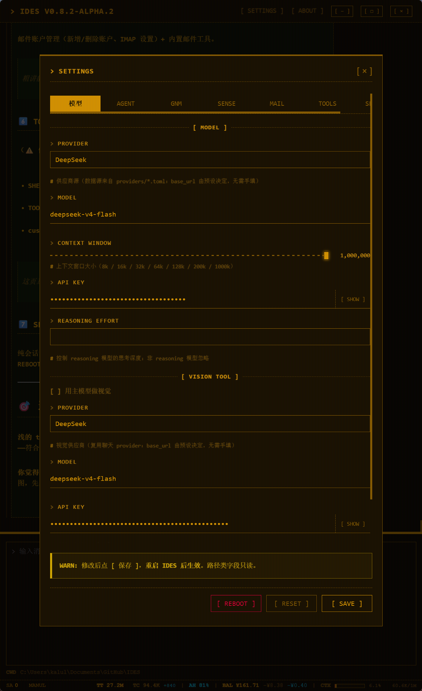
Provider / Model / API Key
- Provider: pick the model provider (DeepSeek, OpenAI, etc.)
- Model: choose from the candidates, or type in the model name manually
- API Key: the key for your provider (if you already filled it in Quick Start, you can leave this alone)
Context window slider
The slider has steps 8k / 16k / 32k / 64k / 128k / 200k / 1M. It does not limit actual conversation — its only job is to tell IDES how large your model's context is, so the status bar in the bottom-right can accurately estimate and display how much context the current conversation has consumed.
Set it too low and the status bar warns you early; set it too high and it's over-optimistic — just set it to your model's real context size.
Reasoning effort (REASONING EFFORT)
Controls how hard thinking models work: leave empty (default) / low (fast) / medium / high (deep). Only applies to reasoning models (e.g., DeepSeek-R1, the o-series); normal models ignore it.
Vision model (VISION)
IDES can "see" — when you send an image to the agent, a vision model parses it. Two ways to set this up:
- Use the main model for vision (checked by default): the main model handles images too, no extra config needed
- Separate vision model: uncheck it, then pick a vision model from another provider (the dropdown reuses your chat providers + model name + a separate API Key)
Also, MAX IMAGE (MB) sets the upper size limit for a single image.
Agents (AGENT)
Controls the run boundary of an agent's task.
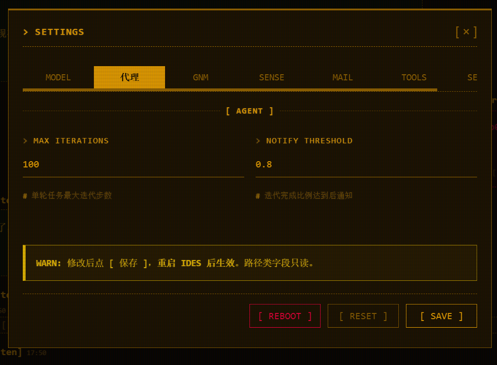
- MAX ITERATIONS: the maximum number of steps an agent can take in a single task (default
100) — prevents the agent from getting stuck in an infinite loop - NOTIFY THRESHOLD: nudges the agent when a task's iterations get close to the limit — when used iterations reach this fraction of the max (default
0.8), the agent gets a reminder like "you're almost at the limit, wrap it up." It's a signal to the agent, not a popup for you
Memory (GNM)
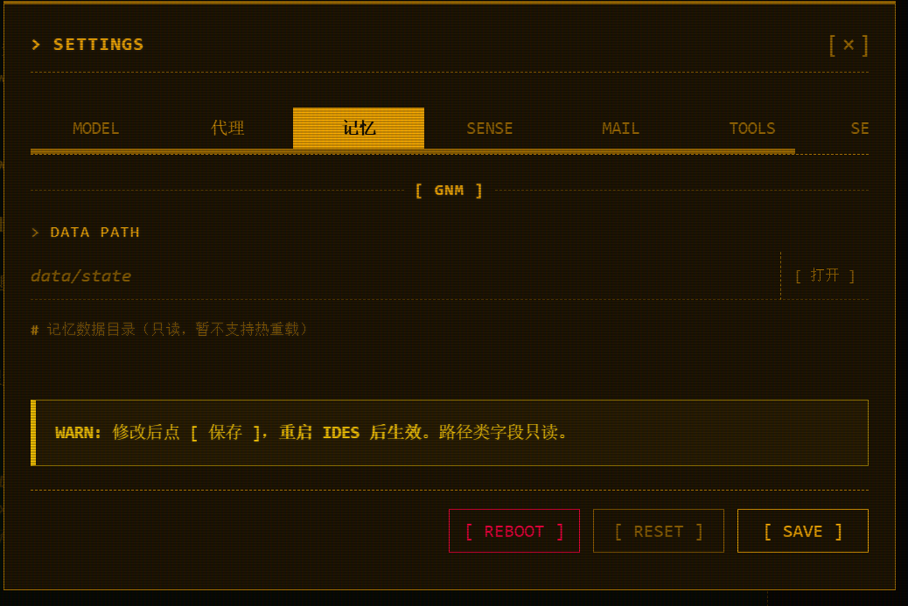
There's only DATA PATH here — which directory your memory lives in (data/state). Click [ Open ] to see it. Read-only in the current version.
GNM memory explained
GNM is IDES's core memory mechanism; this page is just a "peek at where memory is stored." The GNM memory system needs no configuration — it's already optimal — so this section has nothing to adjust. If you want to understand the GNM memory system, see the [ GNM memory explained ] section.
Sensing (SENSE)
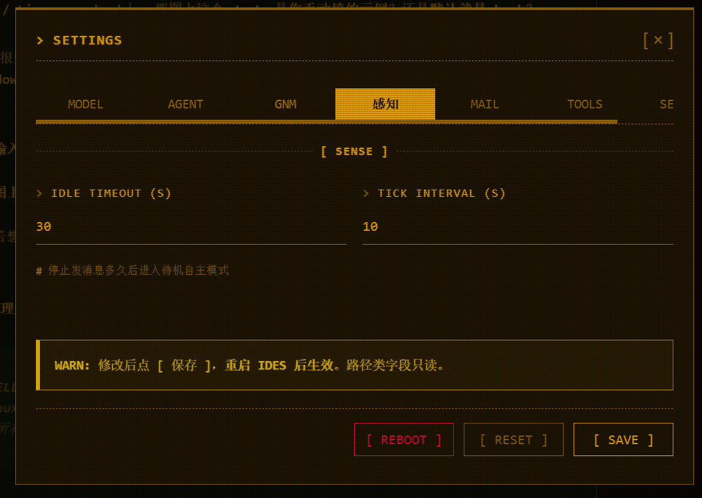
Two fields that control the agent's autonomous sensing:
- IDLE TIMEOUT (S): how long after you stop sending messages the agent goes into standby autonomous mode (default
30seconds) - TICK INTERVAL (S): how often it polls while in autonomous mode (default
10seconds)
Autonomous sensing mode
This decides when the agent "wakes up to take a look and see if there's anything to do." For a deeper dive, see the [ Autonomous sensing mode ] section.
Mail (MAIL)
Email account management + built-in mail tools.
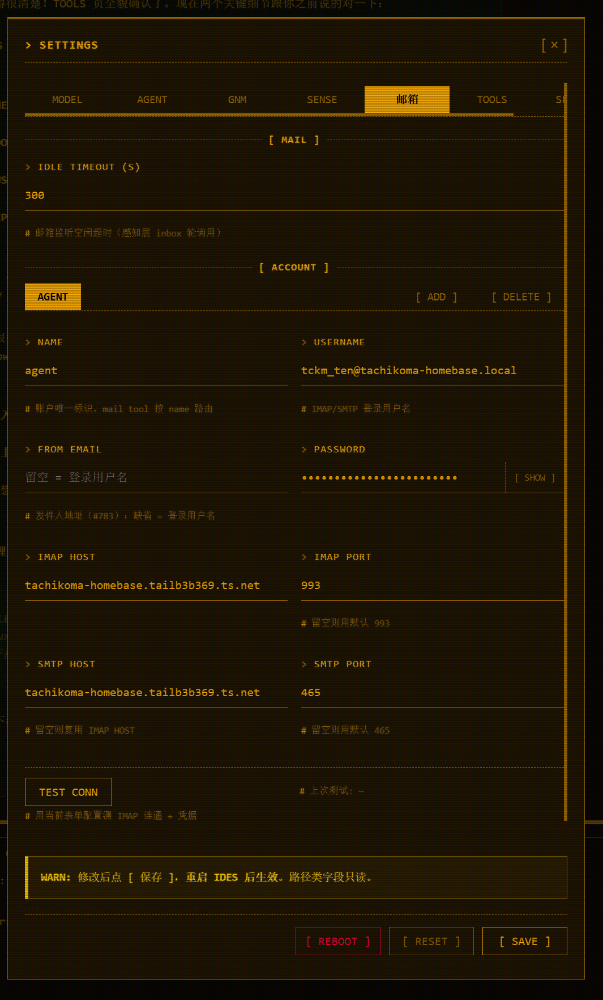
- Account management: [ ADD ] to add / [ DELETE ] to remove an account;
NAMEis the account's unique identifier (the mail tool routes by name) - Connection info: IMAP / SMTP HOST, PORT (default IMAP 993, SMTP 465), login username, password
- TEST CONN: test the IMAP connection and send a message with the current form
What the mail system is for
There are two main uses for the mail system:
- Give the agent its own mailbox (e.g., agentmail) — so you can email the agent directly, and the agent can email you on its own
- Configure your own mailbox — so the agent can help manage your mail (send, receive, triage, reply to todos)
For the full mail system (how the agent uses email, who it talks to, event-driven auto-delivery), see the [ Mail system ] section.
Tools (TOOLS)
Controls the environment the agent uses to run commands.
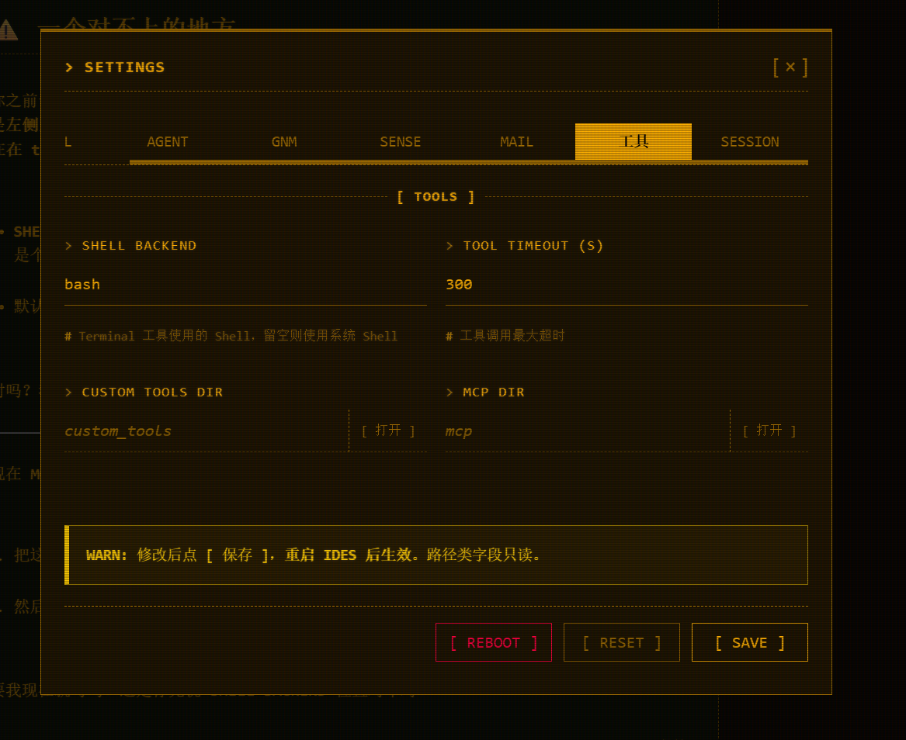
- SHELL BACKEND: the shell the agent uses to run commands. Leave empty for the system default —
cmdon Windows,bashon Linux/macOS. To switch tonu/powershell/zsh, type the shell name. This is a global setting; changing it affects all command execution. - TOOL TIMEOUT (S): the maximum timeout for a tool call (default
300) - CUSTOM TOOLS DIR / MCP DIR: the [ Open ] button jumps straight to your external-tools directory
External tools
Built-in tools can't be turned off; this page manages "which shell the agent uses to run commands, how long it waits, and where to find external tools." The external-tools system (custom tools / MCP) is covered in the [ External tools ] section.
Sessions (SESSION)
A plain session-log directory — you won't need it day to day.
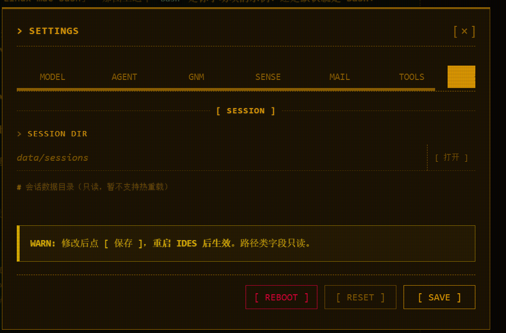
- SESSION DIR: where session data lives (
data/sessions), [ Open ] to see it. Read-only. - The [ Reset ] button below is for restoring factory settings if something goes wrong — use it with care
Not for daily use
This page just tells you "where IDES stores sessions and whether you can clear them" — nothing more.
WebUI Usage
This section covers the chat interface interactions — outside the settings, the everyday operations that are easy to overlook.
Message bubbles: select to quote / comment
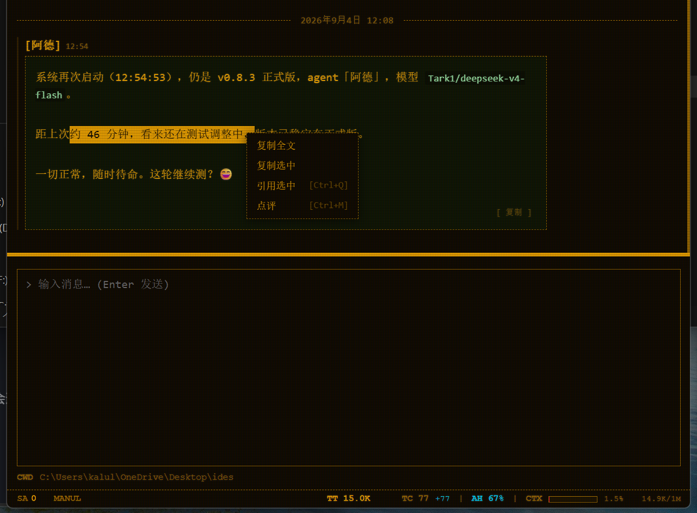
Select text in a bubble and right-click to bring up a menu — besides copying, you can also directly quote or comment:
- Copy full text: copy the entire message
- Copy selection: copy only the selected part
- Quote selection
Ctrl+Q: prefix each selected line with>to turn it into a quote block, then insert it into the input box (not sent, so you can keep editing) - Comment
Ctrl+M: open a comment window (a read-only quote + your comment text); on confirm it inserts into the input box asCOMMENT: xxx
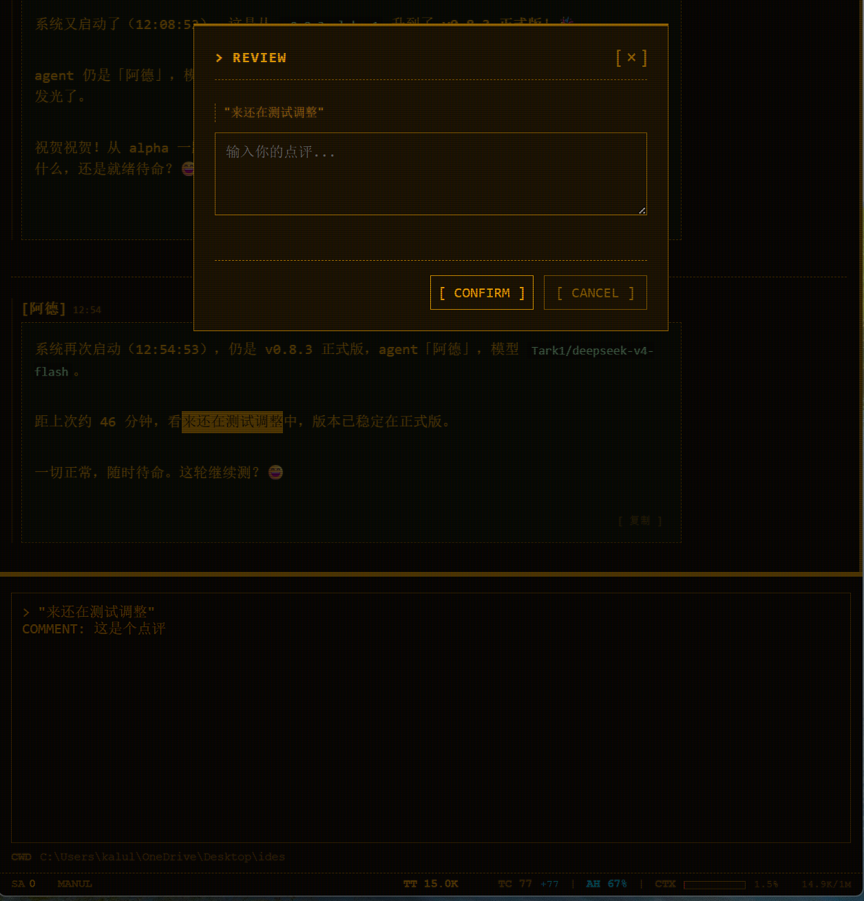
When the shortcuts apply
Ctrl+Q (quote) / Ctrl+M (comment) only work when text is selected. Select a passage → use the shortcut directly — faster than right-clicking.
Paste a screenshot
Copy an image, then just Ctrl+V to paste it into the input box — the image inserts at the cursor position, not at the end. When you send it to the agent, a vision model parses it.
A screenshot is just an image
A pasted image is sent to the agent as an image and recognized by a vision model (the main model by default). See "Models → Vision model" for image handling.
Drag a file onto the input box
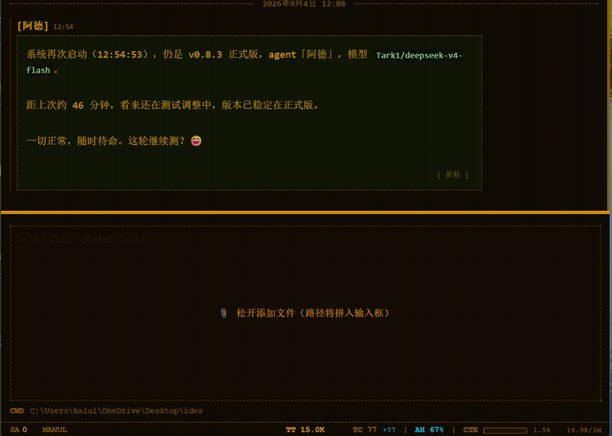
Drag a file into the chat window and the area above the input box highlights "release to add"; when you let go, the file's full path is inserted line by line into the input box. You can keep editing; when you press Enter to send, the path is naturally folded into the message.
You can also use Ctrl+K to bring up the command palette and pick SEND FILES to open a file picker.
Command palette
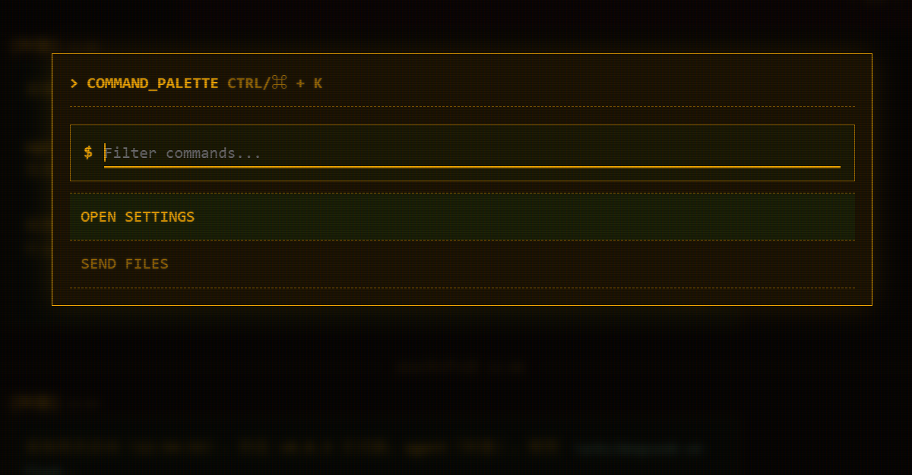
Press Ctrl+K (Cmd+K on Mac) to bring up the quick command palette; Esc closes it. The command list supports type-to-filter, ↑↓ to highlight + Enter to execute.
Ready-made commands:
- OPEN SETTINGS: open the settings popup
- SEND FILES: open a file picker to send files
Command palette vs. drag-and-drop
Both are ways to "hand a file to the agent." Drag it in if you like the mouse, or Ctrl+K → SEND FILES if you prefer the keyboard — whatever fits your habit.
Working directory (cwd) and context files
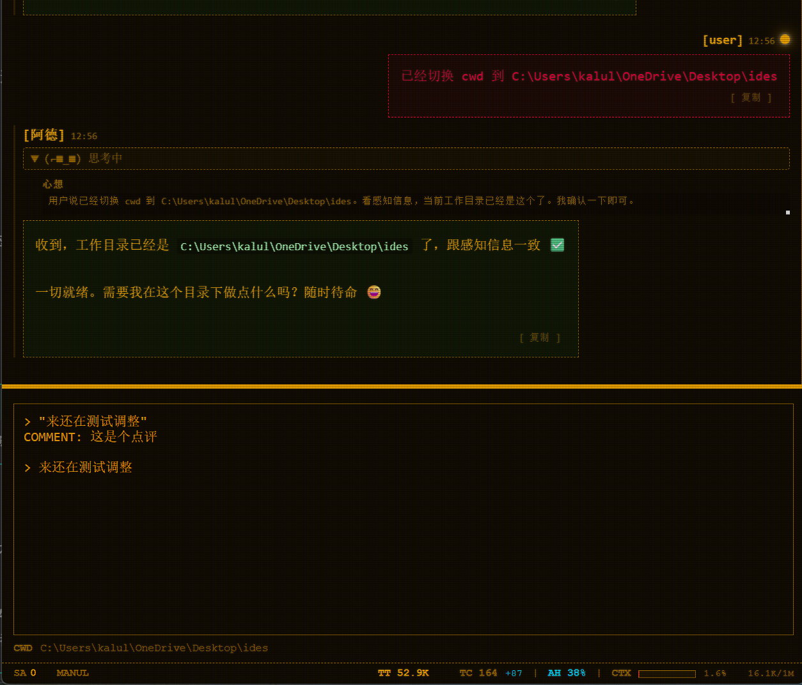
Switch working directory: click the cwd panel at the bottom of the input box and pick a directory. After switching, a popup asks whether to notify the agent that the working directory has changed — confirm and the agent knows.
Context files: the agent looks up from the current working directory for the nearest project constraint file, using it as background knowledge about your project — any of AGENTS.md / CLAUDE.md / .HERMES.md / .CURSORRULES in the project root (case-insensitive) is a candidate.
How to use it
Put an AGENTS.md (or CLAUDE.md) in your project root with your project conventions, coding standards, and things to watch out for — the agent reads it every time, so you don't have to repeat yourself. It ignores suspicious instructions; if content is too long it keeps the key parts.
Status bar
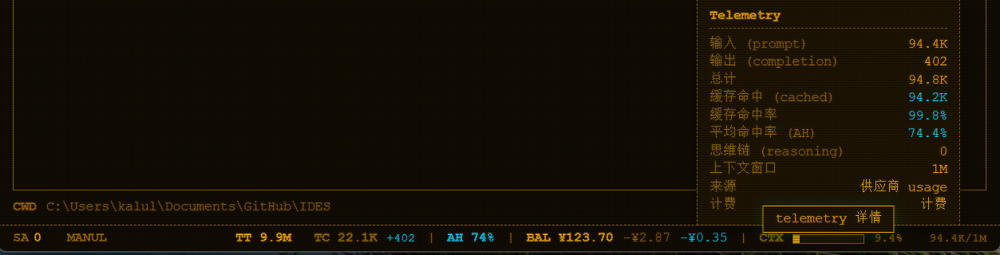
The status bar in the bottom-right shows live run state: context usage (how much the current conversation has used and whether it's close to the limit), sub-agent count, billing, debug toggle, version, and more. It lets you see the agent's current "temperature and load" at a glance. The horizontal row in the figure is the status bar; to its right is the "telemetry details" panel.
How to read context usage
The context usage shown in the status bar is tied to the context window you set (the model page slider) — set your model's real context size accurately and this figure will be accurate too.